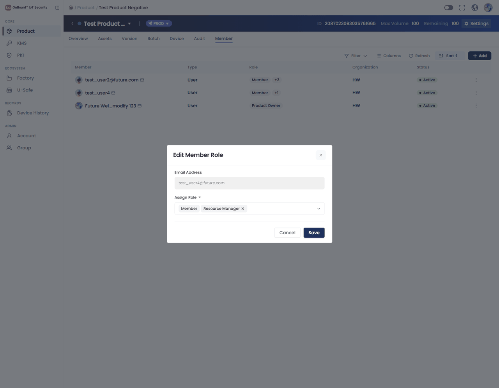
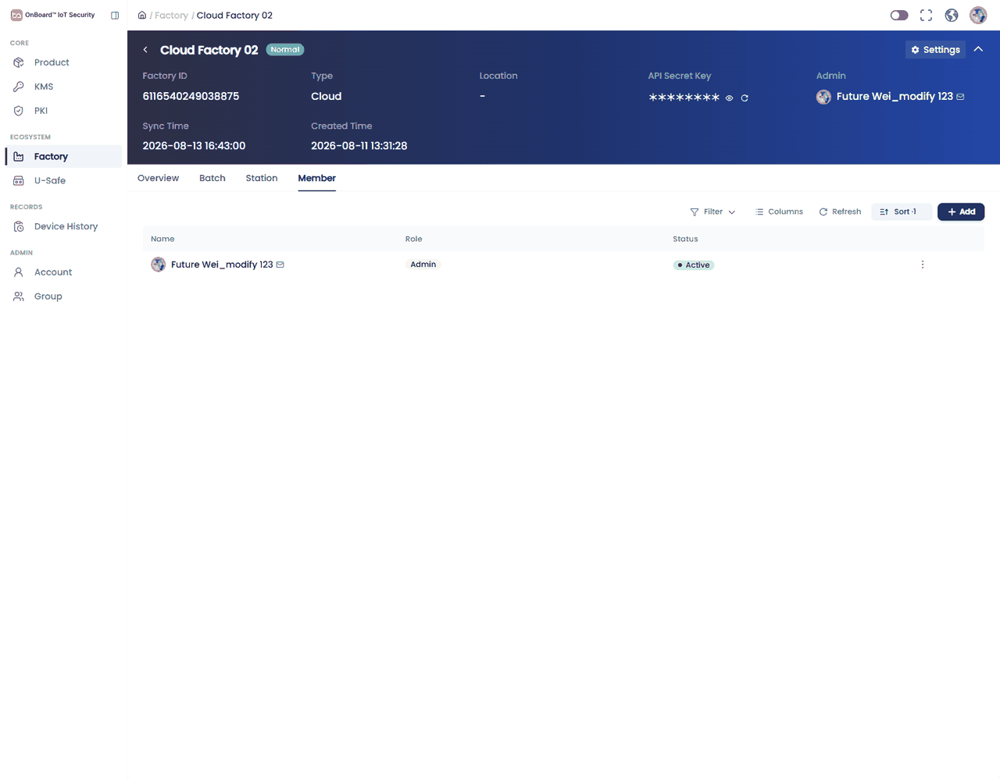
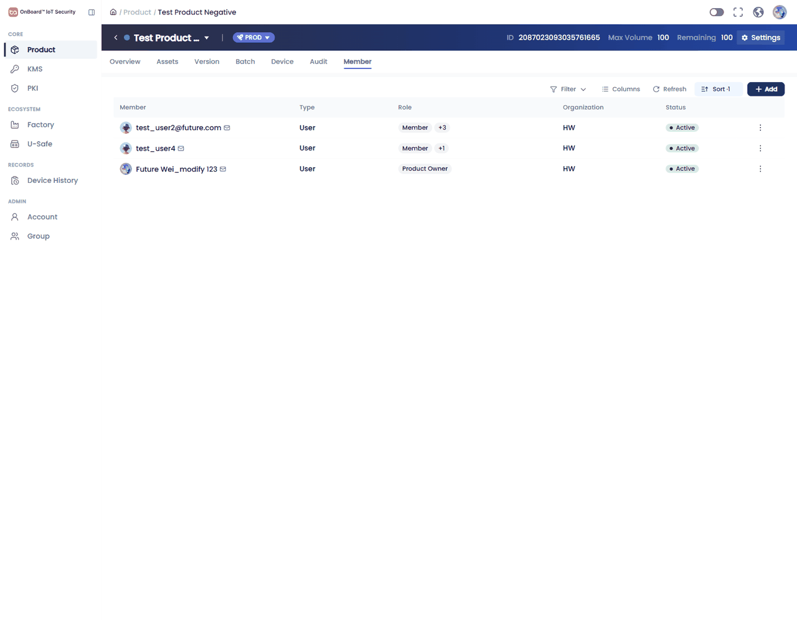
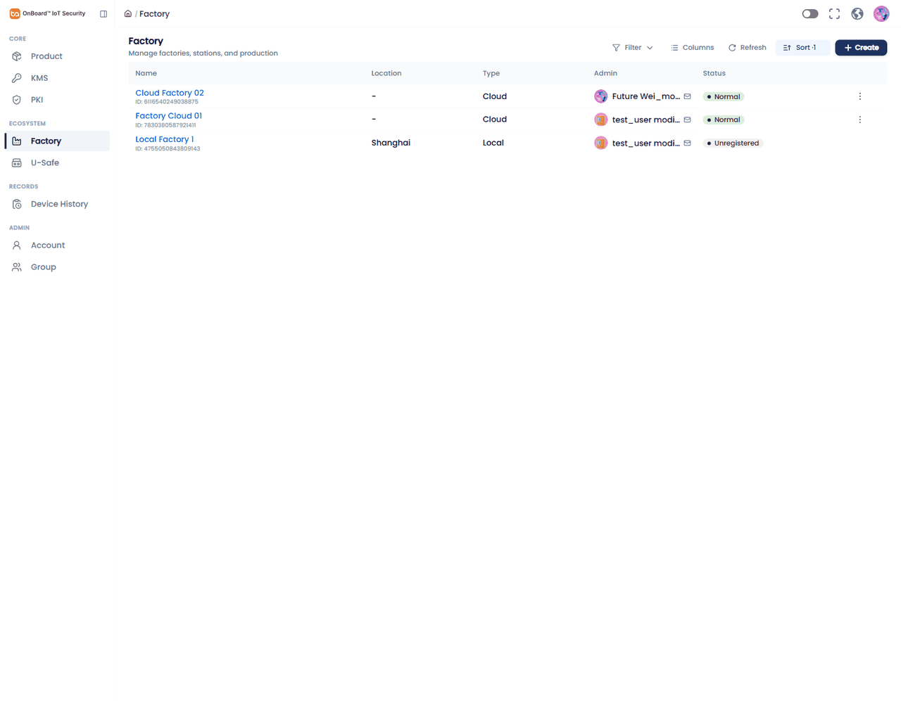
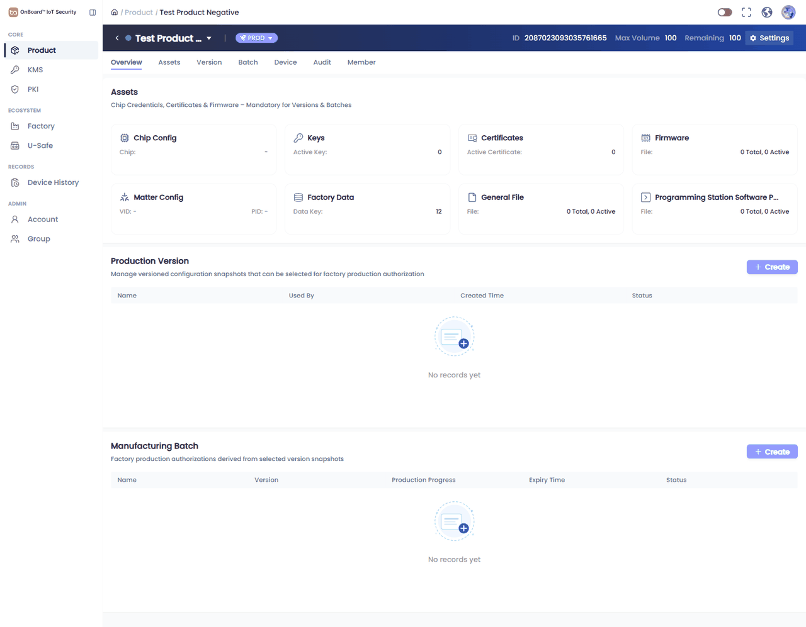
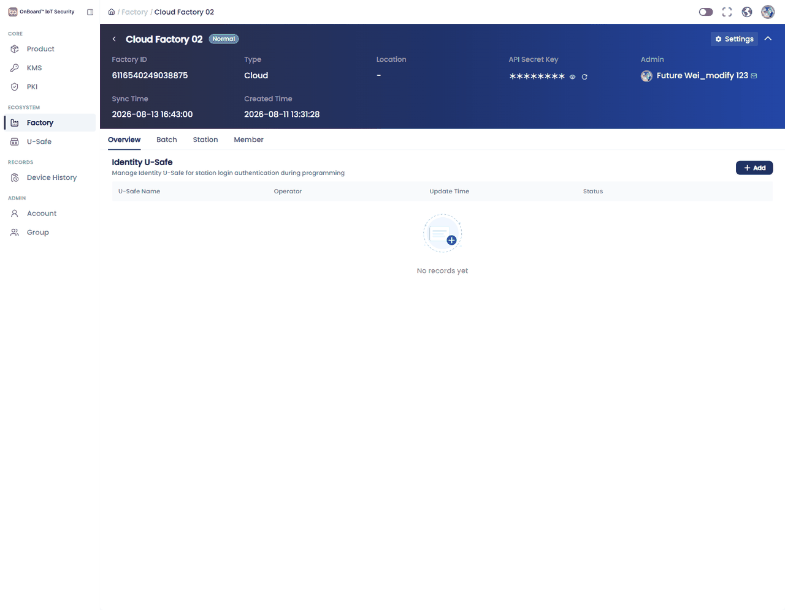

Test Product Negative / 2087023093035761665，目标用户 test_user4@future.com。

test_user modified（Role=Admin）行菜单，出现 Transfer Admin（arco-dropdown-option-disabled 置灰）。AC-07 / 用例预期为 不显示，置灰仍算暴露入口。7830380587921411）头栏 Admin 显示 Future Wei_modify 123；Member 列表同一用户为 Factory Manager，Admin 行是 test_user modified。工厂列表页 Admin 列也是 test_user modified。| # | 步骤 | 预期 | 实际 | 结果 |
|---|---|---|---|---|
| 1 | 进入产品详情 → Member | Member 列表可见 | Test Product Negative Member 列表 3 人：test_user2（Member +3）、test_user4（Member +1）、Future Wei（Product Owner）；有 Add | PASS |
| 2 | 打开目标用户行 ⋮，核对可选角色 | Owner / Product Manager / Resource Manager / Version Manager / Batch Manager / Member | ⋮ → Edit Role / Remove。Assign Role 仅 PM、VM、BM、Member（禁用必选）、RM。缺 Owner | FAIL |
| 3 | 改为 Version Manager 并保存 | 列表 Role 更新 | 未保存（无目标用户会话验证步骤 4；避免 🟡 改权限无法复位验证） | BLOCKED |
| 4 | 目标用户刷新后看 Create Version | 可见 Create Version | 仅有 future.wei 会话，无法用 test_user4 登录 | BLOCKED |
关联 BUG-RPM-01。test_user2 额外角色 hover：Product Manager + Version Manager + Batch Manager（Member +3）。

| 前置 | 仅 Member 账号登录 | 当前账号在该产品为 Product Owner，Add 与 ⋮ 均显示（符合 Owner，不符合本条前置） | BLOCKED |
| # | 步骤 | 预期 | 实际 | 结果 |
|---|---|---|---|---|
| 1 | 工厂详情 Member → Add User | Add User 可见可打开 | Cloud Factory 02 Member 有 Add；弹窗标题为 Add Factory Manager | PASS |
| 2 | 角色选 Factory Admin 并保存 | 保存后 Role=Factory Admin | 弹窗仅 Email，无 Admin 选项；未保存 | FAIL |
| 3 | 再 Add，角色选 Factory Manager | Role=Factory Manager | Add 路径本身只面向 Manager，无法对照「两种角色可选」 | FAIL |
| 4 | 核对 Role 列 Admin ≠ Manager | 两个不同 Role 值 | 列表侧已观察到 Admin vs Factory Manager 是不同值（Cloud Factory 02 Admin；Factory Cloud 01 同时有两种）。赋权路径仍失败 | FAIL |
关联 BUG-RPM-02。弹窗已 Cancel，未加用户。

| 1 | 打开目标用户 Edit User | Edit User 可打开，角色可选 Admin 与 Manager | Cloud Factory 02 Admin 行仅 Transfer Admin；Factory Cloud 01 Manager 行仅 Remove。全程无 Edit User | FAIL |
| 2–3 | 改为 Admin 并用目标会话看 Transfer | Role 变为 Admin 且可见 Transfer | 无 Edit 入口，未改角色 | BLOCKED |
关联 BUG-RPM-02。Admin 唯一性似乎只能走 Transfer，与「Edit User 切换」AC 不符。
用例允许「仅 Factory Manager 且现网不允许其加用户」或以只读账号对照，以现网为准。现网 Factory Manager（Factory Cloud 01）仍显示 Add，且行菜单有 Remove。缺少完全无工厂 Member 管理权的账号，不能把 Manager 有 Add 判成缺陷。
前置要求产品内仅为 Member。当前为 Product Owner，Overview/Settings/Assets 写入口、Member Add/⋮ 均显示。证据见 TC07 GIF。
| # | 步骤 | 预期 | 实际 | 结果 |
|---|---|---|---|---|
| 1 | Overview 编辑产品信息 / 打开设置 | 产品信息可编辑 | 产品名可点；Settings 页有 Product Name / Vendor / Max Volume 等与 Cancel、Save | PASS |
| 2 | Assets 编辑/Add，确认可点后 Cancel | 写入口显示且可操作 | Chip Config → Edit → Add New Content / Cancel / Save；Keys/Certificates 有 Add。已 Cancel 未保存 | PASS |
| 3 | Version 打开 Create Version | 显示且可进入创建 | Create 按钮显示，因 Chip Config 必填为空而 disabled；Settings 页 toast：「The required fields for the assets are empty…」。属数据前置，非无权限隐藏 | PASS |
| 4 | Batch 打开 Create Batch | 入口可用 | Create 显示且同样因无 Version/Assets disabled | PASS |
| 5 | Member 打开 ⋮ 编辑角色 | ⋮ 显示 | 可见 Edit Role（见 TC01） | PASS |
产品 Test Product Negative Chip: -，Active Key/Cert=0。完整走完创建向导需另选 Assets 齐全的产品。

无「仅 Version Manager」会话。test_user2 同时有 VM+BM+PM+Member，且无法用该邮箱登录。
无仅 Batch Manager 会话。
test_user4 为 Member + Resource Manager，但仍无其登录凭证；当前账号是 Owner。
无仅 Product Manager 会话。
| # | 步骤 | 预期 | 实际 | 结果 |
|---|---|---|---|---|
| 1 | 进入工厂 Member | Member 可见 | Cloud Factory 02（ID 6116540249038875），本人 Role=Admin | PASS |
| 2 | 打开本人 Admin 行菜单 | 含 Transfer Admin | 菜单仅一项 Transfer Admin | PASS |
| 3 | 点击 Transfer Admin | 弹窗可打开（不强制移交） | 「Transfer Factory Admin / Select Factory Admin / Cancel / Confirm」已打开后 Cancel | PASS |

| # | 步骤 | 预期 | 实际 | 结果 |
|---|---|---|---|---|
| 1 | 进入工厂 Member | Member 可打开 | Factory Cloud 01，本人 Role=Factory Manager | PASS |
| 2 | 打开本人行及 Admin 行菜单 | 不显示 Transfer Admin | 本人行：仅 Remove。Admin 行（test_user modified）：显示 Transfer Admin（disabled） | FAIL |
| 3 | 全页搜索 Transfer Admin | 不显示 | Admin 行菜单可见该文案 | FAIL |
关联 BUG-RPM-03、BUG-RPM-04。
需要仅 Member 会话抓包/直链。当前 Owner 有写权限，重放会成功，不能当拒绝证据。未改数据、未打无权限接口。
当前账号在 Cloud Factory 02 为 Admin、在 Factory Cloud 01 为 Manager（现网 Manager 仍有 Add）。缺少无工厂 Member 管理权的会话，未重放加用户接口。
test_user2@future.com 在 Test Product Negative 同时拥有 Member + Product Manager + Version Manager + Batch Manager（hover +3 已记录），但无法用该用户登录观察 Create Version ∩ Create Batch。并集规则仍待产品确认。
| 对象 | ID / 标识 | 本账号角色 | 备注 |
|---|---|---|---|
| 产品 Test Product Negative | 2087023093035761665 | Product Owner | Assets 空；Create Version/Batch disabled |
| 工厂 Cloud Factory 02 | 6116540249038875 | Admin | Member 仅本人；用于 TC12 |
| 工厂 Factory Cloud 01 | 7830380587921411 | Factory Manager | Admin=test_user modified；头栏显示不一致 |
| 工厂列表第三家 | Local Factory 1 / 4755050843809143 | 未打开 Member | 列表 Admin=test_user modified，Unregistered |
侧栏抽样（本账号）：Product / KMS / PKI / Factory / U-Safe / Device History / Account / Group 均可见。系统层完整菜单矩阵不在本包范围。